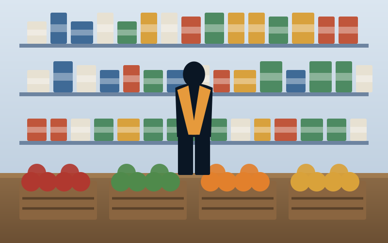
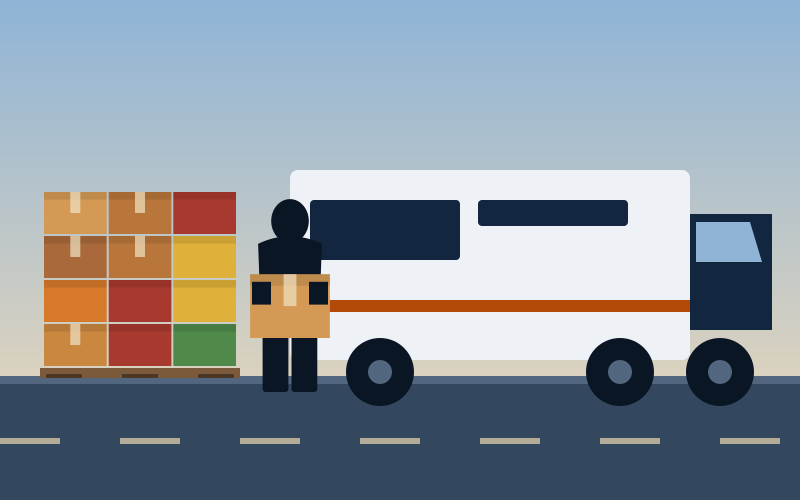
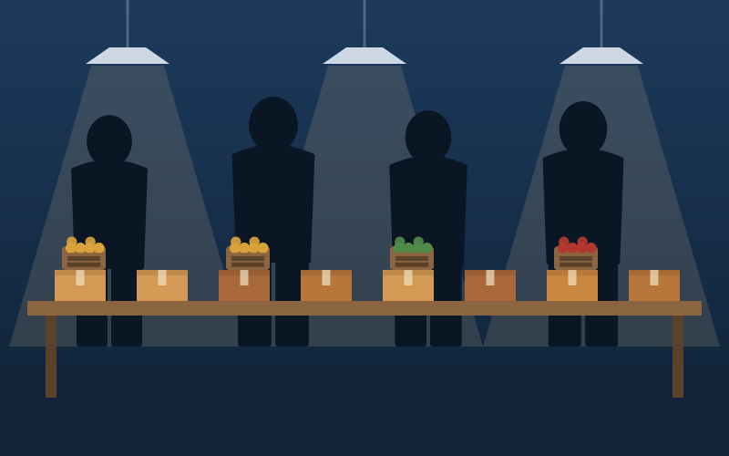
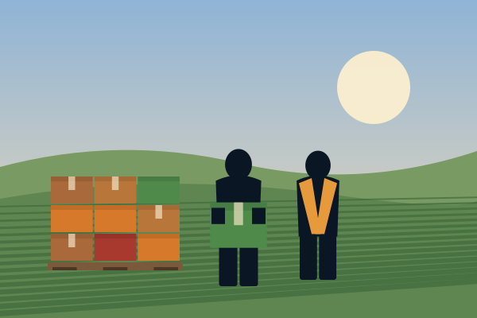
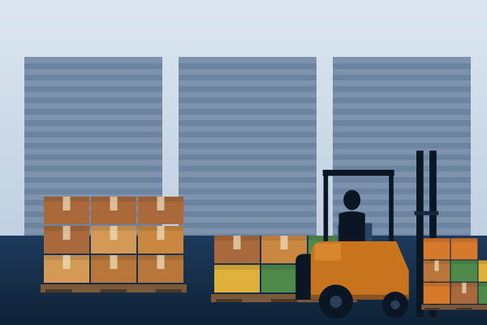

Ways we can help
-

Get help
Find a pantry or meal site near you, see the days and hours, and learn what to bring on your first visit.
Find food near you -

Give help
Your gift helps us buy, haul, and distribute food to neighbors across the county. Give once or every month.
Make a gift -

Take action
Sort produce, pack boxes, or drive a delivery. Shifts run most weekdays and Saturday mornings at the warehouse.
See volunteer dates
Our work last fiscal year
- 5.9Mpounds of food distributed
- 41partner pantries and meal sites supplied
- 3,180volunteers gave their time
- 88¢of every dollar spent on food and programs
FY2025 (July 1, 2024 to June 30, 2025). Source: Brindlecote Food Bank annual report.
Where your dollar goes
Most of what we raise goes straight into food, trucks, and the people who move it. The rest keeps the warehouse open and the lights on.
Based on FY2025 expenses. Full summary on the About page.
- Food and programs88¢
- Operations8¢
- Fundraising4¢
Upcoming events
Volunteer days, drives, and mobile pantry stops.
News and stories
-

October 16, 2026
Fall harvest drop brings apples and squash to the warehouse
Growers from the Ferrow valley delivered the first of this season's produce. It went out to partner pantries within three days.
Read more -

October 2, 2026
Two new dock doors open at the Millrace warehouse
The added doors let two trucks unload at once, which shortens waits for the drivers who bring us donated food.
Read more -
September 18, 2026
Community kitchen class turns extra produce into freezer meals
Volunteers and neighbors cooked side by side at Tarn Hill Hall. The next class is open to anyone on the pantry list.
Read more
Our partner agencies
We supply food to these and 35 other pantries, meal sites, and shelters.
- Hollis Street Pantry
- Larkfield Senior Center
- Tarn Hill Mutual Aid
- Westbrook Family Center
- Oakmere Youth Club
- Ferrow Grange
New since your last visit, .
Your giftYou gave on .
What the food bank has logged since your last visit is just below.
Thank you, .
Your giftYou gave on .
What the food bank logged after you gave
- Just logged
Your share, an estimate
Gifts are pooled, so this is a proportional estimate of your share, not a count.
Since your last visit
Logged since
-
Just logged
Your share, an estimate
Gifts are pooled, so this is a proportional estimate of your share, not a count.